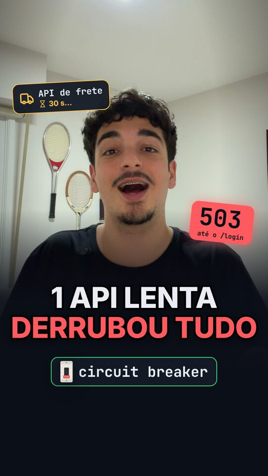
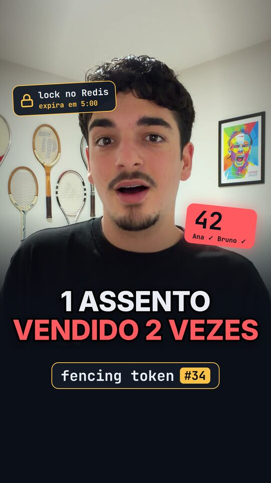
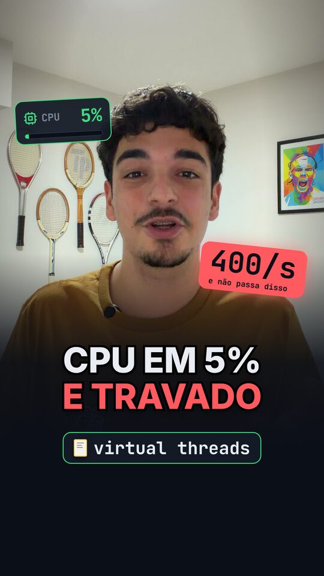

1 API lenta derrubou tudo
Black Friday, a API de frete começa a demorar 30 segundos e o site inteiro cai, até o login. O circuit breaker explica por quê, e como não acontecer de novo.

Novos 4 conceitos
Circuit breaker
Uma API lenta prende as 200 threads e o site cai inteiro.
resiliência1:18
Assistir
Fencing token
Lock no Redis e o assento 42 vendido duas vezes.
consistência1:22
AssistirAssinatura digital
Como a urna prova que ninguém mexeu no resultado.
segurança1:32
Assistir
Virtual threads
CPU a 5% e o sistema travado em 400 pedidos por segundo.
concorrência1:18
AssistirPróximo conceito
em breve
em breve
Pra quem usa Java Spring Boot, threads, resiliência
Sistemas distribuídos quando duas máquinas discordam
Henrique Bueno
Dev backend. Explico concorrência, resiliência e consistência em vídeos de 90 segundos, sempre começando por um problema que você já viu acontecer.
Números ao vivo
Instagram1.284
TikTok742
YouTube96
Views nos últimos 30 dias29.549
Assuntos
- Resiliência e falhas em cascata
- Locks e consistência distribuída
- Concorrência na JVM
- Segurança e assinatura digital